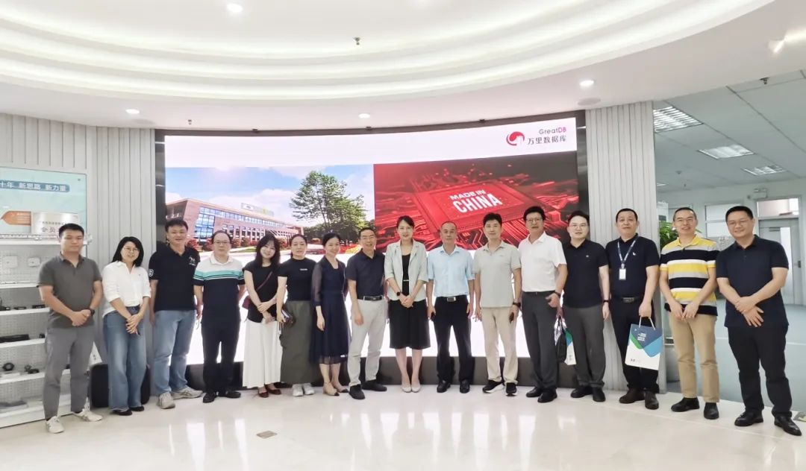
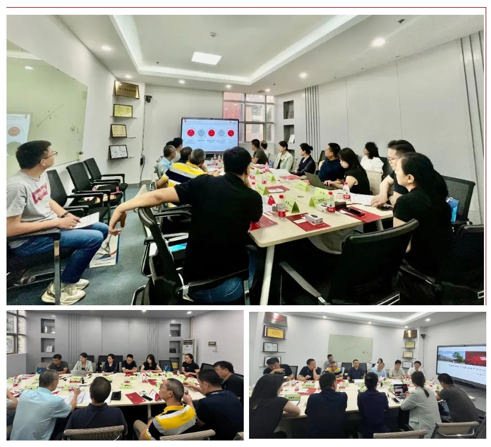
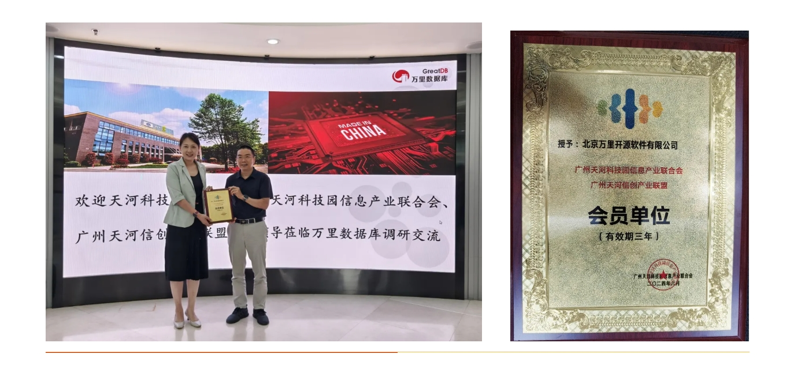

生态合作 业务共赢 | 广州天河科技园管委会一行莅临万里数据库走访调研
2024年6月20日下午，广州天河科技园管委会、广州天河信创产业联盟一行莅临万里数据库华南分公司走访调研。在广州天河科技园管委会（以下简称“管委会”）的带队下，万里数据库与广州天河信创产业联盟（以下简称“信创联盟”）就信创行业的布局、适配、信创需求与合作等方面展开交流分享。

本次调研组由广州天河科技园管委会产业发展处陈瑞雄副处长、马越科长、天河科技园信息产业联合会秘书长王飞以及天河信创产业联盟秘书长林坚武带队，以大科技股份总经理郑臣财、广州赛宝联睿生态总经理付永生、宏方信息总经理李平、工业部元宇宙组织副秘书长简奋、盛祺信息股份副总经理闫建、攀升科技广东总经理洪丹、宝兰德中间件销售经理陈宜丽、广东省信息工程资源部总监周燕莉、品高软件股份市场总监吕红、信创产业联盟助理何嘉琼等会员单位同行参与调研交流。
万里数据库华南区总经理刘若君、销售经理王亚群、售前经理徐文庭等人盛情接待调研组，并在华南办公区举行调研座谈会，双方负责人就各自企业、协会信息进行介绍、致辞，围绕“信创行业的布局、适配、合作”等方面进行了广泛而深入的探讨。

首先，万里数据库华南区总经理刘若君介绍了万里数据库的信创布局及公司在产品、行业的积累情况。售前经理徐文庭对公司过往产品、解决方案方案及信创经验进行阐述，通过多维度分享信创选型思路以及案例经验，让联盟协会及其会员更多地了解万里数据库的信创能力与未来发展空间。
接着，双方进行深入的探讨交流，到场的协会会员单位对所在公司情况进行分享，并提出与万里数据库合作的机会与可能性，根据业务合作可能性对万里数据库提出相应需求。万里数据库现场对协会会员单位给予肯定答复，希望后续双方加强沟通交流，扩大生态合作，从而实现业务共赢。
之后，广州天河信创产业联盟秘书长林坚武向华南区总经理刘若君授予广州天河信创产业联盟会员单位牌匾。这也是继2020年之后，万里数据库再次与信创联盟达成合作的见证。

数智领航，信创强基。面向未来，万里数据库后续将继续与广州天河产业信创联盟推进深化合作，以“数据+技术”双轮驱动，为信创产业及行业用户信息安全赋能注智。
关于广州天河信创产业联盟
为加快形成以国内大循环为主体、国内国际双循环相互促进的新发展格局，从国家战略决心和全民战略共识中，广州天河智慧管委会凭借敏锐的嗅觉，提前在新基建最底层的一环“信创”布局。
信创联盟在天河软件园管委会的指导下，立足天河智慧城，不断吸引产业上下游优势资源汇聚，积极协助天河区2000多家企业向信创平滑过渡，同时，以更开放的心态推动产业升级，为企业提供更多元化、多场景的优质服务，持续推动广州市信创生态圈建设。